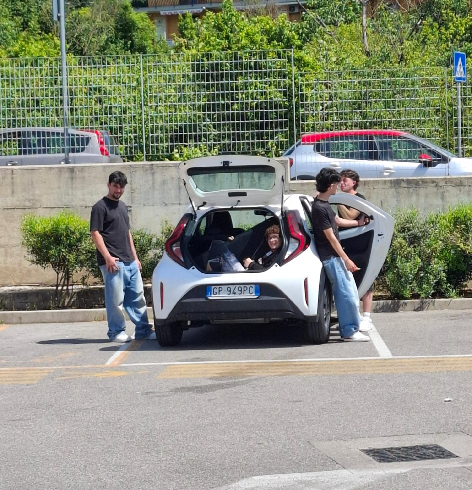
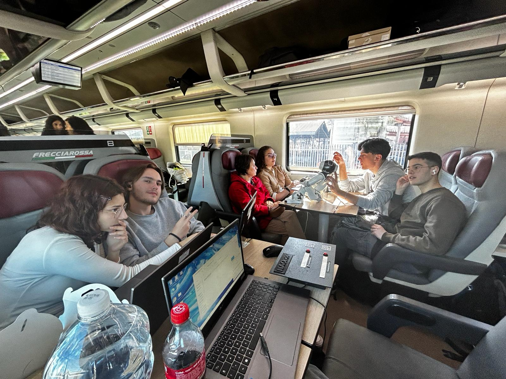

Qualcosa in più su di me
Il mio percorso, le mie passioni e i miei obiettivi.
Chi sono
Sono uno studente qualunque con una forte passione per tutto ciò che è digitale. Mi definisco una persona curiosa, sempre alla ricerca di nuove sfide che mi permettano mettermi in gioco e di migliorare. Mi piace divertirmi e non sapere mai cosa aspettarsi dalla vita e per fortuna sono circondato da persone che condividino il mio pensiero.

Il mio percorso
Attualmente sono uno studente di Informatica, ma il mio interesse per il digitale spazia dal graphic design, al video editing, alla programmazione software e lato hardware, fino al social media management. Già durante le scuole superiori, ho avuto l'opportunità di mettermi in gioco partecipando a diverse competizioni nazionali di programmazione, teamwork e problem solving. Fin da piccolo sono stato affascinato dalla tecnologia e nel tempo libero mi piace restare aggiornato sulle ultime novità del mondo tech.

I miei obiettivi
Aspiro a costruire una carriera che unisca le mie competenze tecniche in informatica con la passione per la content creation. Credo che la tecnologia debba essere non solo sviluppata, ma anche comunicata in modo efficace. Il mio obiettivo è utilizzare il codice per creare soluzioni innovative e il digital storytelling per renderle accessibili e coinvolgenti per il pubblico.